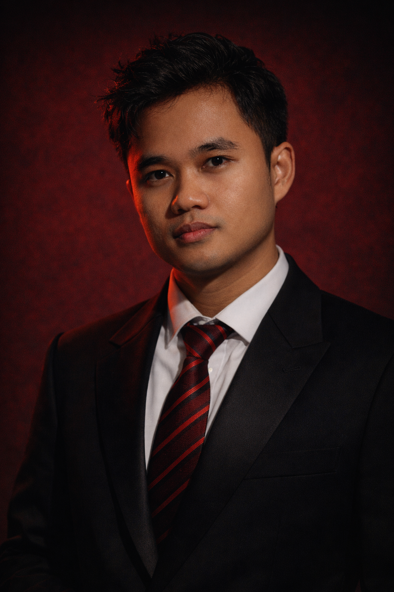

Environmental Geographer · Jakarta, Indonesia
GIS analyst and hydrological modeller with expertise in flood hazard assessment, geospatial data management, and environmental compliance — bridging field research with spatial intelligence.
View Projects →
"An environmental geographer who finds clarity in complexity — translating raw field data, satellite imagery, and hydrological models into decisions that protect communities and ecosystems."
I graduated Cum Laude in Environmental Geography from Universitas Gadjah Mada (GPA 3.79/4.00), where I built deep expertise in the full chain of environmental spatial analysis: from wading rivers to collect cross-section discharge measurements, to calibrating SWMM flood models, to producing publication-ready geospatial outputs.
My thesis applied storm water management modelling to evaluate urban drainage failure and flood hazard scenarios in Salatiga. As a Research Assistant at UGM, I processed over a decade of meteorological time-series for watershed flood compliance studies, and contributed to a peer-reviewed paper on river morphometry. In 2024, I led authorship of a published geohazard study on Semeru Volcano's lahar flow dynamics, applying Flow-R and DEM analysis to map risk corridors and propose countermeasures.
Currently, I maintain and quality-control a national-scale geospatial database at Indonesia's Ministry of Forestry — processing 20+ regulatory documents daily and applying environmental compliance frameworks to forest area permitting maps. I am proficient in QGIS, ArcGIS, SWMM, HEC-HMS/RAS, Flow-R, Python, and RStudio, and I am actively developing skills in remote sensing workflows and coastal process modelling.
Urban flooding in Salatiga's Sidomukti catchment presented recurring hazards to residents and infrastructure. To evaluate the root cause and model future risk, I integrated multi-source data — satellite imagery, weather station records, and field-measured channel cross-sections — into a calibrated SWMM (Storm Water Management Model).
The model simulated flood discharge and runoff behaviour under multiple storm return periods (2-year, 5-year, 25-year). I identified critical drainage bottlenecks and produced a spatial risk map of inundation-prone zones, delivering concrete channel redesign recommendations to support city-level flood management planning.
Semeru Volcano's active eruptive cycle generates lahar flows that threaten downstream communities along the Besuk Kobokan river system. As corresponding author, I led the application of the Flow-R geohazard modelling framework to map probable lahar flow paths and deposition zones across multiple DEM-derived terrain scenarios.
Field sediment samples and geodetic GPS data — collected during my internship at Sabo Engineering Office — informed the model parameterisation. The study identified high-risk corridors, evaluated existing sabo dam effectiveness, and proposed spatial countermeasure strategies to the Ministry of Public Works.
As Research Assistant at UGM's Faculty of Geography, I processed over 10 years of meteorological and hydrological time-series records for the Belik Watershed (Yogyakarta) to support SWMM-based flood compliance modelling — a workflow directly analogous to hydrodynamic modelling in professional environmental project delivery.
In parallel, I conducted independent river morphometry surveys across 5 segments of the Blongkeng River: measuring channel cross-sections, calculating discharge values, characterising bank morphology, and conducting sedimentation analysis. This fieldwork contributed data to a peer-reviewed publication on river dynamics and geomorphological change.
Deployed at the Sabo Engineering Office (Ministry of Public Works and Housing) for a 5-month internship in active volcanic lahar zones around Semeru, East Java. I collected high-precision geospatial data using geodetic GPS equipment across multiple survey sites, performed sediment particle size analysis, and recorded soil mechanics parameters to characterise lahar deposit properties.
I analysed topographic and meteorological datasets to contribute to hydrology research reporting, providing the field evidence base that later underpinned our 2024 IOP Conference publication on Semeru lahar flow modelling.
Within Indonesia's national SINERGY Information System, I maintain and update the geospatial records underpinning forest area utilisation permits for the Directorate of Forestry Planning. Processing 20+ regulatory documents daily, I apply GIS quality control standards to ensure spatial accuracy of forest boundary and land-use maps at national scale.
My work applies Indonesia's environmental regulatory framework (PermenLHK No. 7/2021) to compliance documentation, requiring both technical GIS precision and clear understanding of environmental permitting law. I also resolve multi-source dataset inconsistencies, improving reporting accuracy across a complex national spatial database.
This study applied the Flow-R geohazard model to characterise lahar flow paths originating from Semeru Volcano, East Java — one of Indonesia's most active volcanic systems. Using digital elevation models (DEM), remote sensing data, and field-collected sediment parameters gathered during survey operations with the Sabo Engineering Office, we modelled probable flow corridors, run-out distances, and deposition zones under multiple eruption scenarios. The study evaluated the effectiveness of existing sabo dam infrastructure and proposed spatial countermeasure recommendations to the Ministry of Public Works, providing an evidence base for disaster risk reduction planning in volcanic lahar-prone communities.
View Publication → IOP Conference SeriesOpen to opportunities in environmental consulting, GIS analysis, hydrological modelling, and EMMP/AMDAL project delivery — in Indonesia or internationally.
Full curriculum vitae with detailed work history, technical skills, publications, and references available on request.
Download CV (PDF) ↓